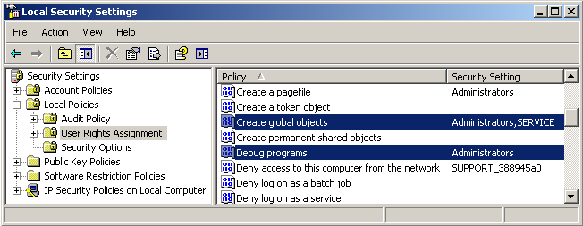

The user for the rrService has to be able to
1. Login at the local workstation.
2. Login at the fileserver share.
Explanation:
The client needs to access the files on your fileserver.
And for file access you need to login with a user name and password.
So the service starts the client with the login of a rrService User.
The rrService User can be any user login in your company.
Any user, that is able to access the data on your fileserver.
Is user XXX the right user?
If you login on your workstation with user XXX and you can access all project data (!!without entering any further password!!), you can use user XXX.
Some companies prefer to create a new user YYY only for RRender (so they can track file access at the file server).
Test if user XXX is right (Description is for Windows):
If you have renamed the display name of you user, then windows still uses the original user name internally.
To check the user name, please right-click on the computer icon (desktop or start menu) and choose "Manage".
Select "Local Users and Groups".
You have listed all users with a "Name" and a descriptive "Full Name".
RR requires you to use the "Name".
The User needs to be either
a) in the local group "Administrators" (recommended).
(not required to be a domain admin, it only needs to be a local admin on the workstation)
OR
b) the user has to be in the group "Performance Monitor" (not recommended),
requires at least the local privilege "Debug Programs", "Create global objects" and "Replace a process level token".
(you can change privileges via the tool Control Panel / Administrative Tools / Local Security Policy. In that program "Local Policies/ User Rights Assignment")
Note: You probably need to add additional privileges, otherwise the client can not execute functions like "Shutdown Machine" or "Sync time with server".

The rights are required for:
rrServer:
The user you use for the rrServer service does not require to be admin.
Are you in a domain and it is a domain user? Then you have to enter the domain name at the installer.
If not, then the "domain" edit line has to be empty.
If you are not in a domain, then you have to manually create the user on each workstation.
If you create a user, check "password never expires" and UNcheck "user has to change password on first login".
Also, have you tried to login with that user on the workstation?
Cause windows should tell you more detailed information if there is a problem.